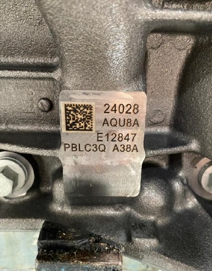
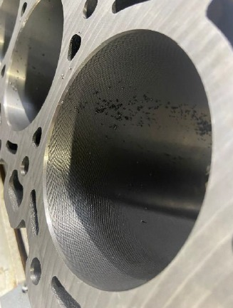
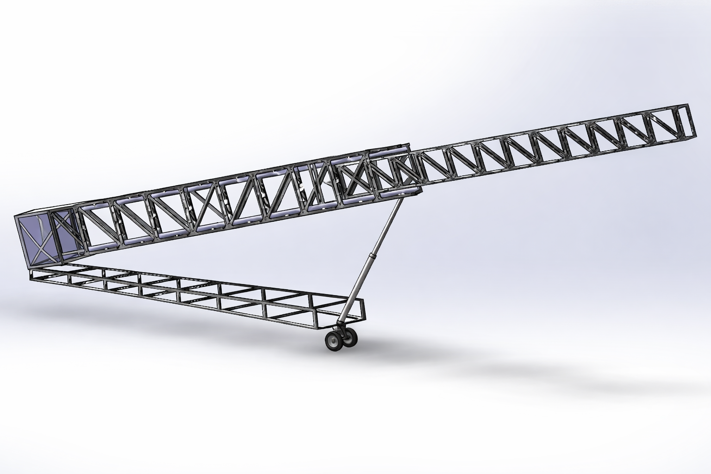
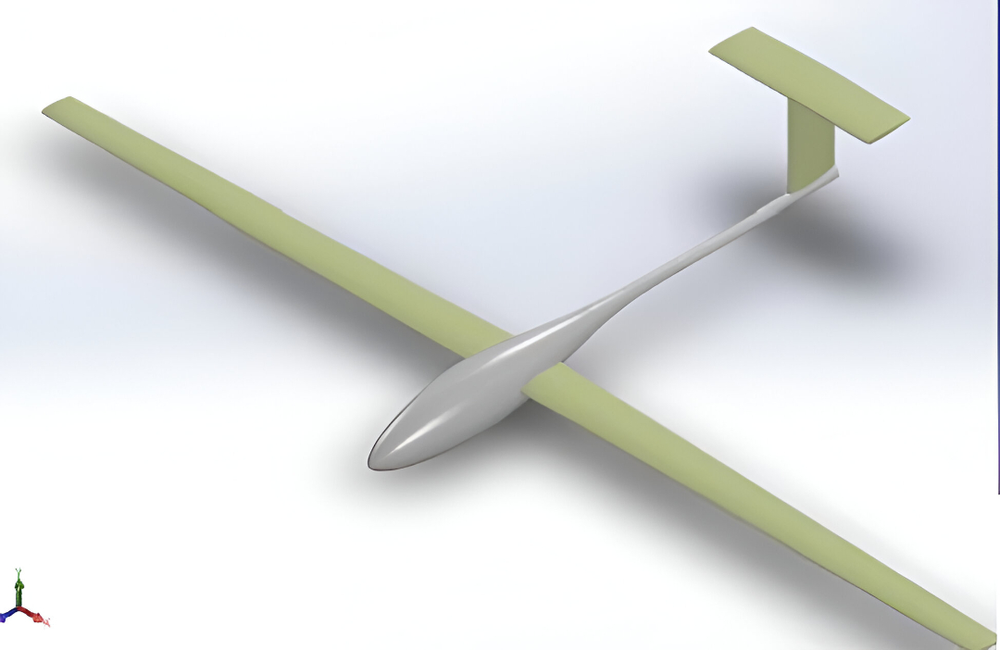
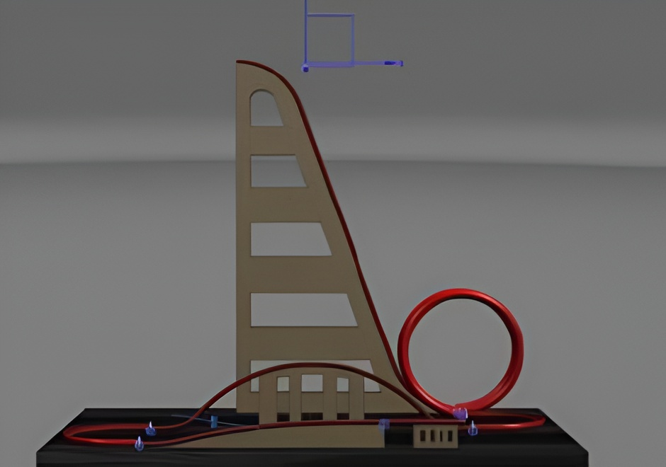

Selected Projects

Reinhart Conveyor Pallet Sensor
Resolved recurring pallet detection failures caused by reflections, liquid contamination, and poor sensor positioning. Implemented mechanical and positional modifications that restored conveyor reliability and recovered lost production time.

Automated Inspection System
Designed and implemented a QR‑based automated inspection station for 6.7L diesel engine blocks. The system eliminated manual data entry, improved operator efficiency, and enabled real‑time quality tracking through PLC integration.

OP60 Flatness Inspection
Diagnosed micrometer‑level flatness defects caused by improper clamping and sensor degradation. Replaced aging sensors and introduced an additional cleaning step, eliminating downstream assembly issues.

Telescoping Boom Truss
Led material selection, structural analysis, fatigue evaluation, and CAD modeling for a client‑driven mechanical design project. The final design met strict load, lifetime, and cost constraints.

Glider Structural Design
Designed and analyzed a complete glider system, including airfoil selection, structural analysis, and CAD modeling. Evaluated over 20 airfoils and validated performance through simulation and hand calculations.

Roller Coaster Prototype
Early‑career dynamics project involving full CAD design and force analysis of a roller coaster system. Translated theoretical dynamics into a functional physical model.